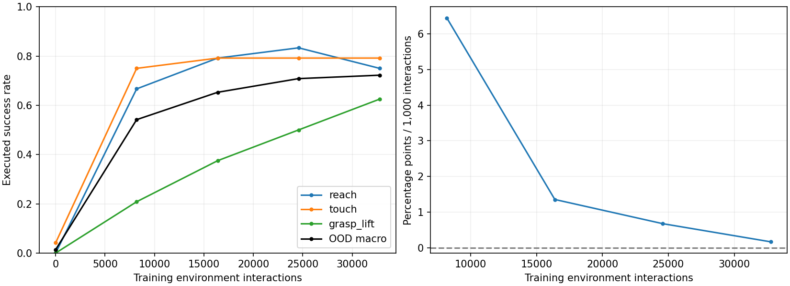

These are executed simulator tasks, not speech-recognition scores.

Goals are explicit spatial/contact specifications. The body has a proximity-grasp primitive. The movement predictor is learned from random experience; the task cost and CEM planner are supplied.
Development curves are descriptive; the separate final test uses fresh scene seeds and fixed training endpoints.
{
"normalized_auc": 0.5677083333333333,
"growth_pp_per_1000_interactions": [
null,
6.442599826388889,
1.3563368055555547,
0.6781684027777795,
0.16954210069444384
],
"sustained_threshold_interactions": {
"0.5": 8192,
"0.8": null
},
"threshold_note": "null means threshold was not observed at two consecutive scheduled evaluations"
}